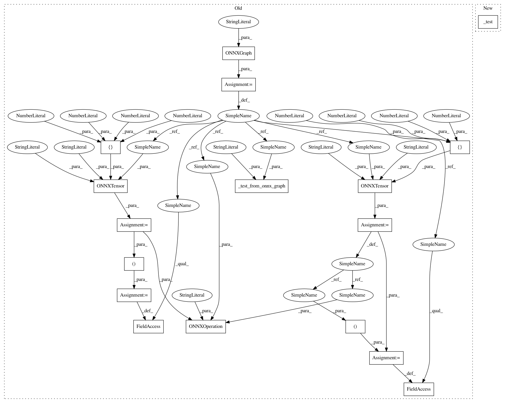

3e5f67ba78d7bdfd64735a0679a488613b1b6fc9,tests/conversion/onnx_layer_test_cases.py,ONNXLayerTestCases,test_Less,#ONNXLayerTestCases#,422
Before Change
self._test_from_caffe2(self.get_unary_network_function("LeakyRelu", kwargs=dict(alpha=0.01)))
def test_Less(self):
g = ONNXGraph("test_network")
x = ONNXTensor(graph=g, name="x", shape=[1, 2, 5, 5], dtype="FLOAT")
y = ONNXTensor(graph=g, name="y", shape=[1, 2, 5, 1], dtype="FLOAT")
a = ONNXTensor(graph=g, name="a", shape=[1, 2, 5, 5], dtype="BOOL")
ONNXOperation(graph=g, name="Less", inputs=(x, y), outputs=a)
g.inputs = (x, y)
g.outputs = (a,)
self._test_from_onnx_graph(g, "Less")
def test_Log(self):
self._test_from_caffe2(self.get_unary_network_function("Log"))
After Change
self._test(self._unary("LeakyRelu", attribs=dict(alpha=0.01)))
def test_Less(self):
self._test(self._binary("Less", dtype="FLOAT", out_dtype="BOOL"))
def test_Log(self):
self._test(self._unary("Log"))
In pattern: SUPERPATTERN
Frequency: 3
Non-data size: 17
Instances
Project Name: KhronosGroup/NNEF-Tools
Commit Name: 3e5f67ba78d7bdfd64735a0679a488613b1b6fc9
Time: 2019-04-17
Author: tamas.danyluk2@gmail.com
File Name: tests/conversion/onnx_layer_test_cases.py
Class Name: ONNXLayerTestCases
Method Name: test_Less
Project Name: KhronosGroup/NNEF-Tools
Commit Name: 3e5f67ba78d7bdfd64735a0679a488613b1b6fc9
Time: 2019-04-17
Author: tamas.danyluk2@gmail.com
File Name: tests/conversion/onnx_layer_test_cases.py
Class Name: ONNXLayerTestCases
Method Name: test_Neg
Project Name: KhronosGroup/NNEF-Tools
Commit Name: 3e5f67ba78d7bdfd64735a0679a488613b1b6fc9
Time: 2019-04-17
Author: tamas.danyluk2@gmail.com
File Name: tests/conversion/onnx_layer_test_cases.py
Class Name: ONNXLayerTestCases
Method Name: test_Equal